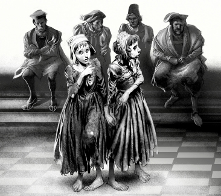

Listen to Part 1:
Vua Tom
Bây giờ hãy quay lại với vị vua mới, Tom Canty. Tom ngủ rất ngon sau Bữa tiệc lớn. Cậu tỉnh dậy và nghĩ rằng mình đang ở Tòa án Offal. Nhưng rồi cậu mở mắt ra. Cậu thấy chiếc giường lớn của mình và những người hầu. Cậu đang ở trong cung điện.
‘Tất cả đều là thật!’ cậu tự nhủ.
Sáu người hầu giúp cậu mặc quần áo. Họ tắm rửa, mặc quần áo và cắt tóc cho cậu. Họ khiến cậu trở nên thật đẹp đẽ. Sau đó, sáu người hầu khác đưa cậu đến phòng ăn sáng. Họ cho cậu ăn, và đứng quan sát cậu. Hai giờ sau, cậu đã sẵn sàng.
Tom được đưa đến phòng ngai vàng. Trong phòng có rất nhiều người đàn ông quan trọng. Họ đều đang đợi Tom nhưng Tom không biết tại sao. Cậu ngồi lên ngai vàng và rất im lặng.
Huân tước bảo hộ bước vào phòng. ‘Chúng ta có một cuộc họp rất quan trọng sáng nay. Bây giờ ngài là vua rồi, thưa ngài, chúng ta phải nói về một số điều quan trọng. Cha ngài đã chi rất nhiều tiền cho cung điện và cho chiến tranh. Bây giờ chúng ta không còn nhiều tiền nữa.’
‘Cái gì cơ?’ Tom hỏi. ‘Nhà vua là một người rất giàu có. Mọi người đều biết điều đó!’
‘Không, thưa ngài,’ Huân tước bảo hộ trả lời. ‘Chúng ta thậm chí không trả tiền cho những người hầu.’
‘Ồ trời ơi,’ Tom nói. ‘Chúng ta phải làm gì đây?’
Listen to Part 2:
‘Ngài là vua, thưa ngài. Ngài hãy bảo chúng tôi phải làm gì!’
‘Tôi hiểu rồi,’ Tom nói. Cậu biết phải làm gì. ‘Cung điện này quá lớn. Chúng ta sẽ sống trong một cung điện nhỏ hơn. Và có quá nhiều thức ăn tại các bữa tiệc,’ cậu tiếp tục. ‘Chúng ta không cần phải ăn quá nhiều thức ăn như vậy.’
Những người đàn ông trong phòng không có vẻ gì là vui vẻ. Họ không thích ý tưởng của Tom.
‘Chúng tôi sẽ cân nhắc những ý tưởng của ngài, thưa ngài,’ Huân tước bảo hộ tiếp tục. ‘Nhưng chúng ta còn nhiều thứ khác để nói.’
Tom đang trở nên rất buồn chán. Cậu muốn đi chơi với bạn bè mình ở Tòa án Offal. Cậu nhìn ra ngoài cửa sổ và thấy một nhóm người. Họ đang vừa đi vừa kêu la.
‘Họ đang làm gì vậy? Tôi muốn biết,’ Tom nói.
Huân tước bảo hộ ra ngoài để tìm hiểu. Khi ông trở lại, ông nói với Tom, ‘Những người kia đang đi theo hai tù nhân. Những tù nhân sẽ bị tống vào tù mãi mãi. Họ sẽ không bao giờ được gặp lại gia đình nữa.’
Tom nghĩ điều này thật kinh khủng. ‘Hãy đưa họ đến đây!’ cậu nói.
Cánh cửa mở ra. Những người lính đi vào cùng hai cô gái tội nghiệp. Tom nhìn vào những tù nhân. Họ giống như chị em của cậu, Nan và Bet.
‘Tại sao họ lại bị tống vào tù?’ cậu hỏi.
Listen to Part 3:
‘Họ là phù thủy,’ Huân tước bảo hộ nói rất nghiêm túc.
‘Phù thủy!’ Tom kêu lên. ‘Thật ngớ ngẩn!’
Mọi người đều ngạc nhiên. Vào thời điểm đó, rất nhiều người nghĩ rằng phù thủy là có thật nhưng Tom lại có những ý tưởng mới.
‘Không có phù thủy nào cả,’ cậu nói.
‘Nhưng hai cô gái này là phù thủy!’ Huân tước bảo hộ nói. ‘Họ đã gây ra một cơn bão.’
‘Làm sao họ có thể gây ra một cơn bão?’ Tom hỏi.
‘Họ đã nói một số từ … và họ đã cởi giày,’ Huân tước bảo hộ nói.
‘Họ đã cởi giày ư?’ Tom nói. Cậu đang cười. ‘Rất tốt, hãy xem nào.’ Cậu yêu cầu hai cô gái trẻ đứng dậy. Họ rất sợ hãi và lo lắng.
‘Các cô có thể gây ra một cơn bão không?’ cậu hỏi họ.
‘Không, thưa ngài,’ các cô gái trả lời. ‘Mọi người nói chúng tôi là phù thủy vì chúng tôi nghèo. Họ không thích chúng tôi.’
Listen to Part 4:
Tom muốn cho mọi người trong cung điện thấy rằng các cô gái không phải là phù thủy.
‘Hãy cởi giày ra ngay,’ cậu nói. Mọi người trong phòng đều rất lo lắng.
‘Thưa ngài!’ Huân tước bảo hộ nói. ‘Nếu họ cởi giày ra, sẽ có một cơn bão khủng khiếp hoặc thậm chí điều gì đó tồi tệ hơn!’
‘Chúng ta sẽ xem!’ Tom nói. Các cô gái cởi giày ra. Mọi người cứ chờ đợi mãi. Không có chuyện gì xảy ra. Không có mưa, không có gió, không có bão.

‘Họ không phải là phù thủy!’ Tom hét lên. ‘Hãy thả hai cô gái này ra!’
Các cô gái cảm ơn Tom và chạy ra khỏi cung điện. Mọi người trong cung điện đều nói về Tom.
‘Có lẽ vị vua mới này không điên,’ họ nói. ‘Ông ấy thực sự thông minh!’